| ALL |
|---|
Spring
Spring is an open-source Java framework that simplifies enterprise application development. It provides tools for dependency injection, aspect-oriented programming, and integration with other frameworks.
Core modules include – Spring Core, Spring Context, Spring AOP, Spring Data, Spring Web, Spring Security, and Spring Boot.
Dependency Injection (DI) is a design pattern where Spring manages object dependencies – allowing loose coupling between components.
The lifecycle includes bean instantiation, property setting, initialization (via @PostConstruct or init-method), and destruction (via @PreDestroy or destroy-method).
ApplicationContext is a container providing configuration, lifecycle management, and dependency injection for Spring beans.
BeanFactory is a basic container for bean management – while ApplicationContext offers advanced features like internationalization, event handling, and AOP support.
Spring supports both programmatic and declarative transaction management using @Transactional or the TransactionTemplate class.
This is one of the most important Spring IoC interview questions. Here is how you should answer it. Spring IoC (Inversion of Control) is a container that manages object creation and their dependencies – promoting loose coupling through Dependency Injection.
Spring achieves loose coupling through Dependency Injection and the use of interfaces – making modules independent and easily interchangeable.
The DispatcherServlet is the front controller in Spring MVC that handles incoming HTTP requests and delegates them to appropriate handlers.
Spring AOP (Aspect-Oriented Programming) allows you to define cross-cutting concerns like logging, security, and transactions, separately from the application logic.
Spring handles exceptions using @ExceptionHandler in controllers, @ControllerAdvice for global handling, and custom exceptions with proper HTTP status codes.
@Transactional simplifies transaction management declaratively, while programmatic transactions use code (e.g., TransactionTemplate) for finer control.
Spring Boot simplifies development by providing embedded servers. It also offers auto-configuration and starter dependencies. This reduces the need for manual setup.
Spring Boot Starters are predefined dependencies. They help set up Spring applications quickly. They require minimal configuration. Examples include spring-boot-starter-web and spring-boot-starter-data-jpa.
@Qualifier is used when multiple beans of the same type exist. It helps specify which bean to inject. This resolves ambiguity in bean selection.
You might also come across Spring JDBC interview questions like this one. Spring JDBC simplifies database operations. It provides helper classes and templates. These classes reduce repetitive code. They also handle common tasks like connection management.
@Bean is used to define a bean within a Java configuration class, – allowing Spring to manage its lifecycle and dependencies.
@RequestMapping is a generic annotation for handling HTTP requests, while @GetMapping is a shortcut for HTTP GET requests.
Spring Boot Actuator provides production-ready features like metrics, health checks, and application insights to monitor and manage Spring Boot applications.
Spring Profiles allow you to define different configurations for different environments (e.g., dev, prod) in a Spring application.
Spring MVC is synchronous – while Spring WebFlux is asynchronous, built for handling non-blocking, reactive programming in web applications.
@PreAuthorize is used to secure methods with specific roles or permissions before method execution, based on expression-based access control.
Spring uses @Transactional for declarative transaction management, allowing automatic transaction handling at the method level with rollback features.
@Scope defines the lifecycle of a Spring bean (e.g., singleton, prototype) – while @Singleton (in non-Spring contexts) restricts a class to one instance globally.
Spring AOP allows the separation of cross-cutting concerns like logging, security, and transactions from the main business logic using aspects.
Spring Data JPA simplifies database interaction by creating repositories for entities and providing built-in methods for CRUD operations.
Spring Boot simplifies configuration, provides embedded servers, and includes auto-configuration, reducing the need for boilerplate code compared to Spring MVC.
You can enable caching by using the @EnableCaching annotation in a configuration class and @Cacheable on methods that require caching.
Spring Boot, Spring Cloud, and Spring Data are used to build microservices, with tools like Eureka for service discovery and Ribbon for load balancing.
Common patterns in Spring include Singleton, Factory, Proxy, and Observer patterns, which help manage beans and improve modularity.
Spring Batch is used for processing large volumes of data in batch jobs. It supports features like transaction management, job scheduling, and error handling.
“I would use the @Qualifier annotation to specify which bean to inject. This helps me avoid ambiguity when multiple beans of the same type are present in the context.”
“I would use the @Transactional annotation with the rollbackFor attribute. This allows me to specify which exceptions should trigger a rollback, giving me more control over transaction management.”
“I would first profile the application to identify bottlenecks. I’d review the autoconfiguration, lazy loading, and database connections. I might optimize startup performance by using @Lazy or adjusting application configurations.”
“I would check if the request URL matches the method mapping and ensure the correct HTTP method (GET, POST) is used. I’d also validate the controller and method annotations like @RequestMapping or @GetMapping.” |
|
TEST
This is test...
|
|
API TERMS
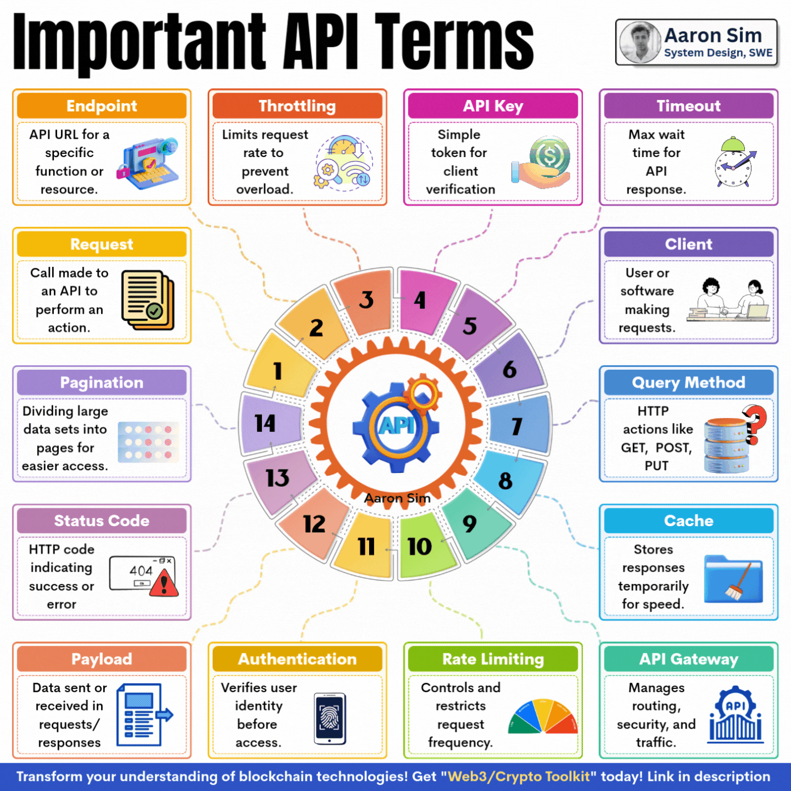
Must-Know API Terms |
|
SQL BASICS
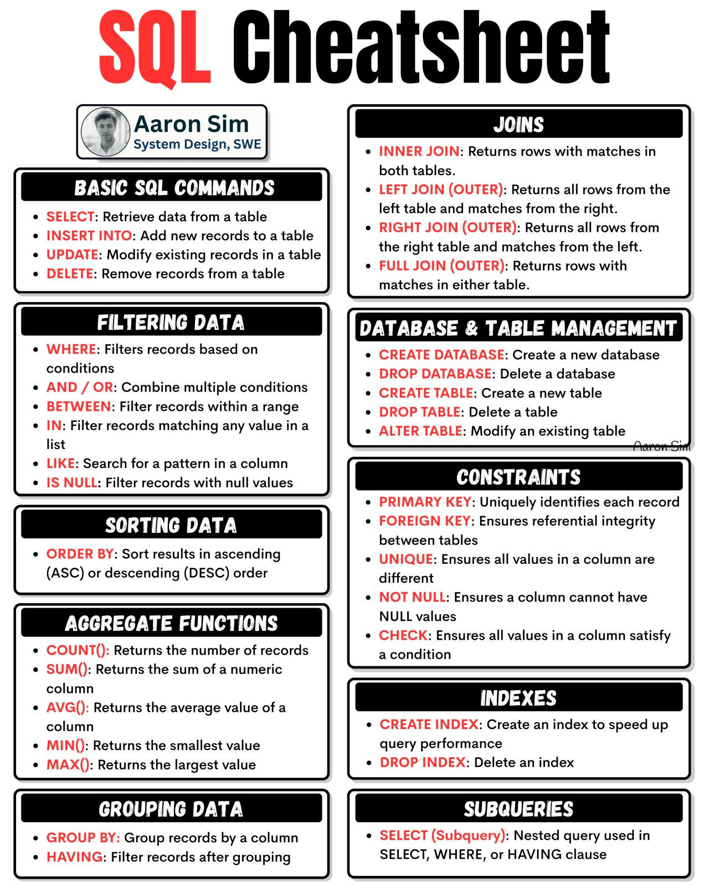
SQL Cheatsheet - Master the Essentials |
|
GIT
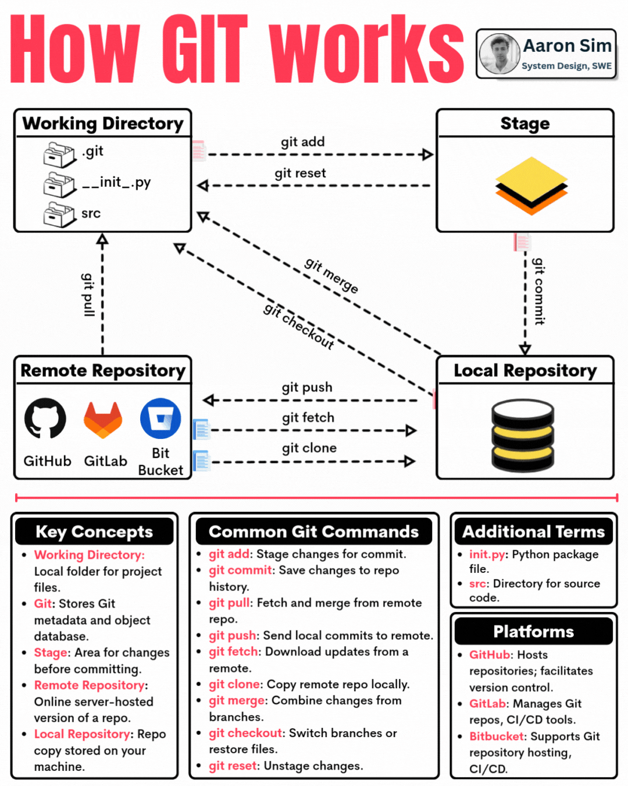
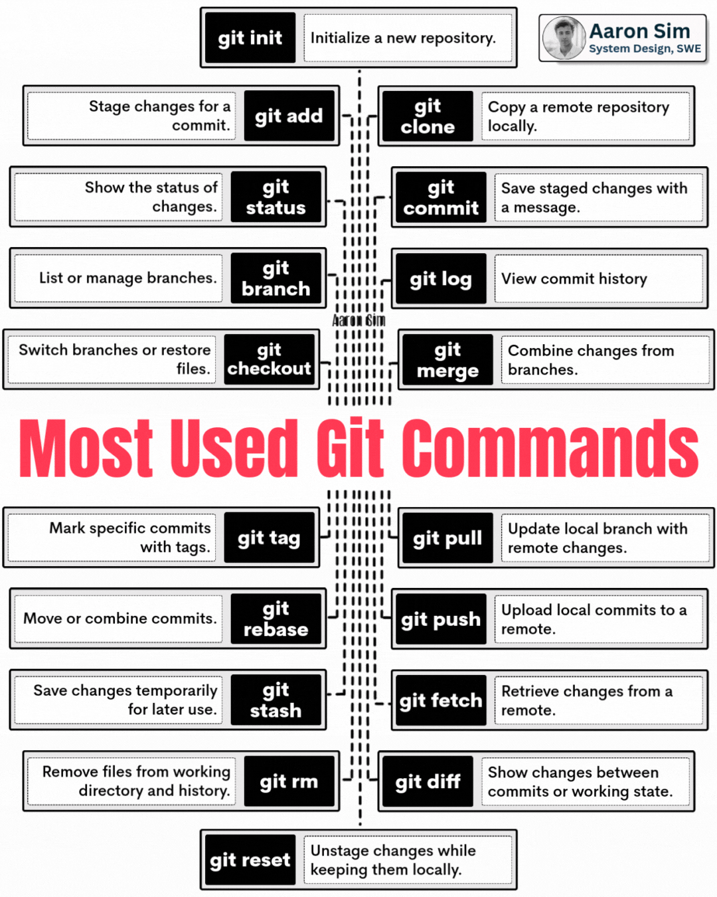
|
|
REST API AUTHENTICATION METHODS
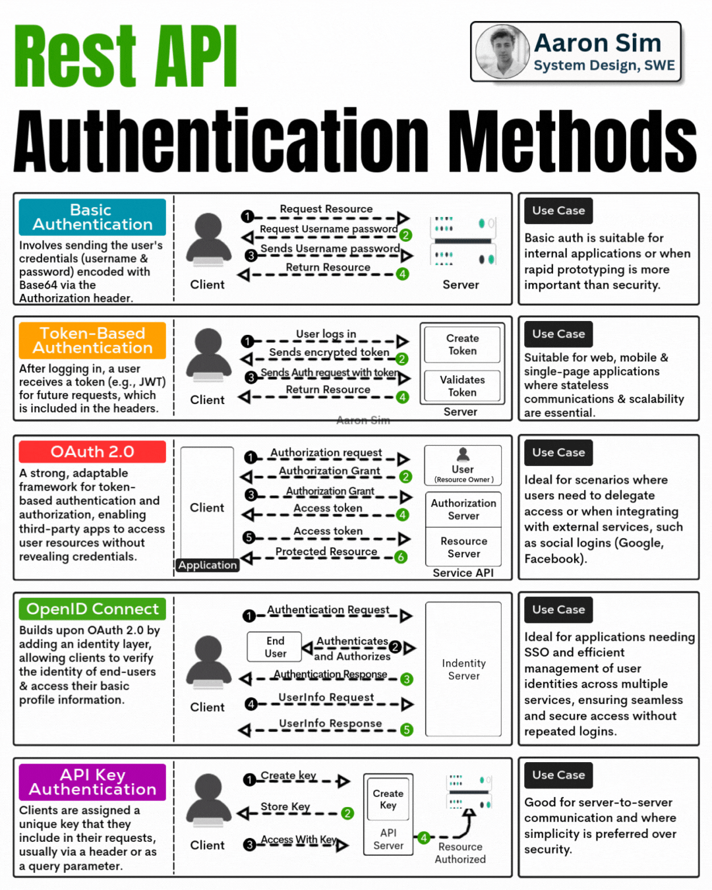
|
|
HTTP STATUS CODE
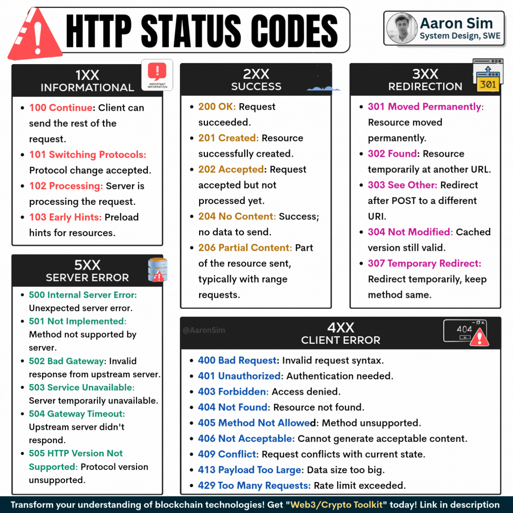
|
|
ACID in database
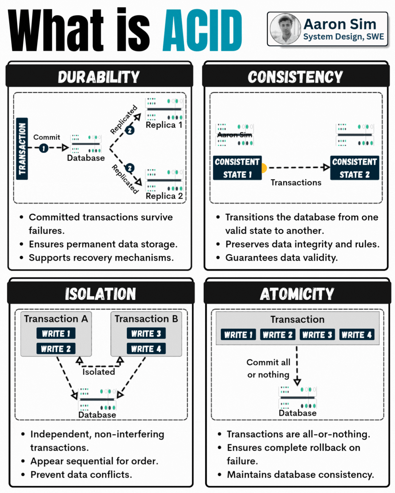
What is ACID in Databases? |
|
API TESTING
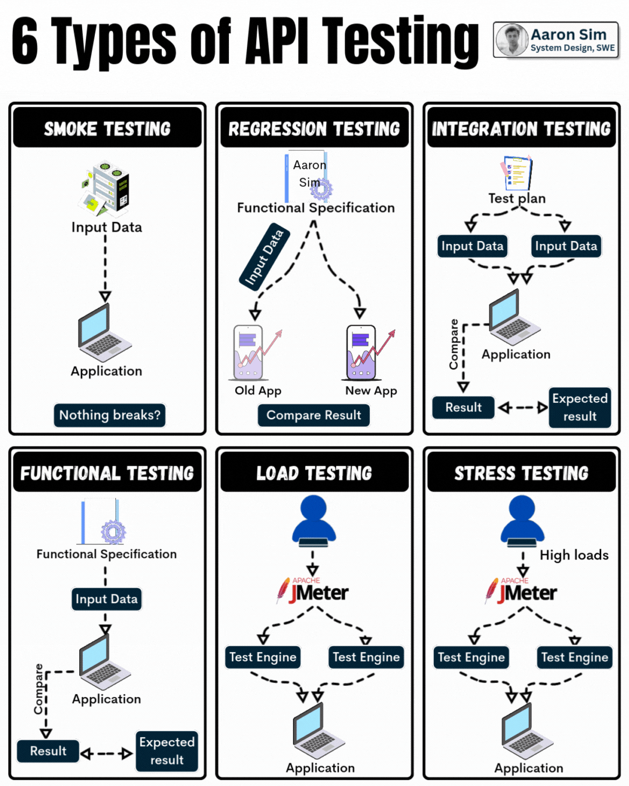
6 Essential Types of API Testing |
|
API PROTOCOL
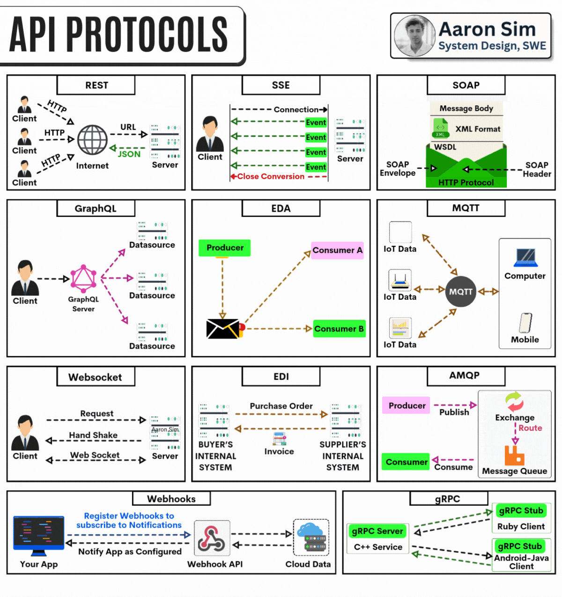
➤ API Protocols Explained |
|
API SECURITY TIPS
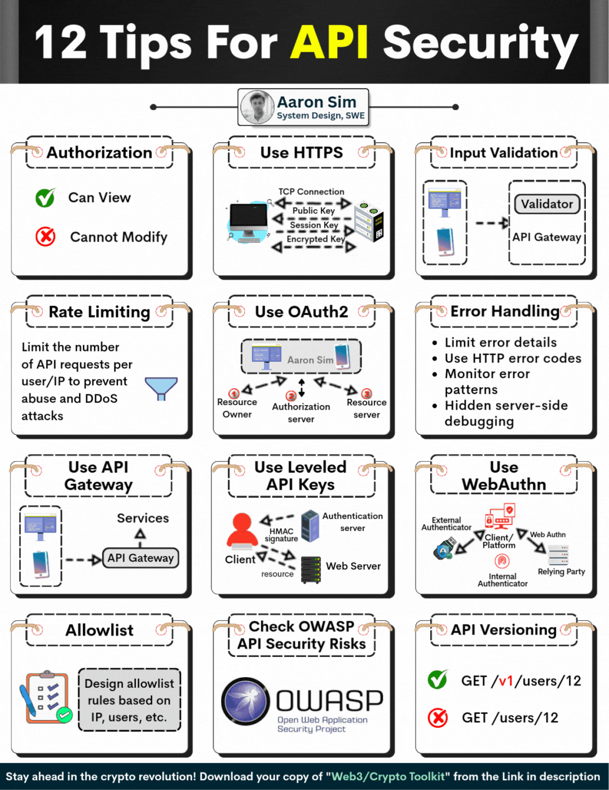
🔐 Top 12 API Security Best Practices You Should Never Ignore |
|
BASIC SERVER TYPES
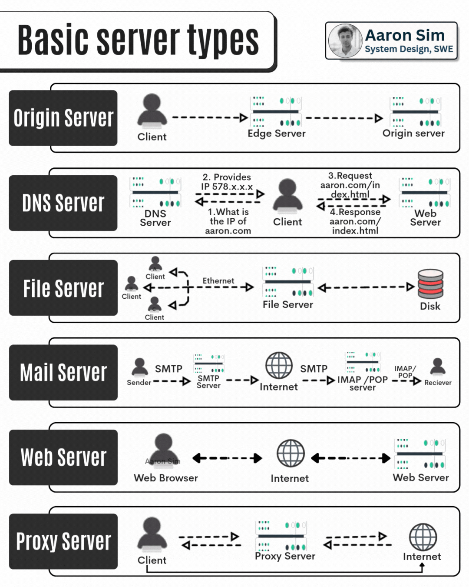
8 Core Servers Every IT Pro Should Know |
Top 8 Most Used Network Protocol

⏩ Top 8 Most Used Network Protocols |
SQL Basics Part 2

🔷 SQL CHEATSHEET (Quick Reference) |
|
PDF
https://www.linkedin.com/in/bhuvneshyadav02/ What’s Inside the PDF? 🔐 Authentication vs. Authorization – Know the Difference! |